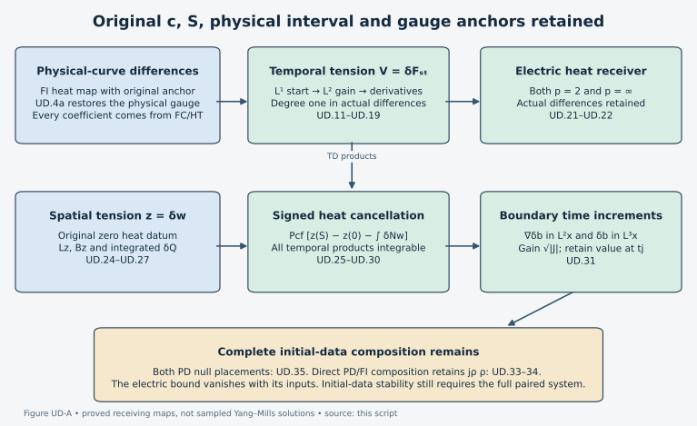

Temporal
differences, electric data and boundary increments
This Unit 9 chapter follows an actual difference through temporal
heat smoothing, the electric field identity and physical-time
reconstruction. Every estimate vanishes with its difference inputs. The
final section calculates the remaining potential-wave coefficients and
identifies the additional step required for a bound from the initial
data alone.
1. Original
objects, domains and coefficient inputs
The connections
are the two actual regular caloric-temporal connections on
,
with the original
,
,
and
.
A compact physical subinterval
containing
will be used to evaluate the anchored coefficient maps; no heat endpoint
or gauge anchor is changed. Put
.
The physical norms may subsequently be restricted to a slab not
containing
,
but its coefficient inputs must still include the original gauge history
from
.
A local slab norm alone is not substituted for that history. Every
spatial derivative is the full ordered tuple. Matrix and output labels
use Hilbert–Schmidt norm; gauge suprema use operator norm.
(UD.1)
In particular
by the actual Gauss and Yang–Mills equations. The exact physical-curve
input is
. It is not an initial-data distance. The following symbols denote
bounds of actual fields:
(UD.2)
Each row has its primed counterpart. These suprema are over the
actual
and
.
The names
are numerical coefficients, not new connections. The quantities
are provided by HT/ES/FC. FI.21–FI.42 and its exact differentiated gauge
product provide
;
in particular
(UD.3)
The last line is ED.11/ED.25b;
,
in ED’s heat-energy choice, and
is FI.42 with both gauge placements. Thus these coefficients have
degree-one majorants in
;
no estimate of
has yet been used.
Here is how to evaluate the individual inputs uniformly, rather than
leave them as unspecified regular-solution norms. On the original FC
interval use precisely FC.18
(UD.4)
and FC.19–FC.22. These give the numerical
and
This FC representative has identity temporal-gauge anchor and
;
it is not identified with the original pre-caloric
.
Their exact transition is the time-independent
:
.
Both solve the same temporal-gauge ODE back from their respective
anchors, which proves this equality. At the reference time, FI.8–FI.9
give the original DeTurck coefficients
.
The heat-gauge equation
,
,
yields
(UD.4a)
Here
,
bounded by the stated original data radius. For the first row integrate
;
unitarity removes the undifferentiated heat-gauge coefficient. For the
second row differentiate the exact anchor equation
.
Its two derivative terms cost
,
and its two products cost
.
Sobolev gives the displayed
bound. The full affine gauge product at later times gives the last row,
including the product
.
This restores the original anchor before using the original-curve input
to FI.
Take the maximum with the primed value. In FI’s auxiliary
construction use
and
.
This is an evaluation device; FI.38 returns to the prescribed endpoint
,
with its generally nonidentity anchor. It is not a replacement of the
original heat interval. On
,
insert
and the HT/ES
jets into FI.35. For every curvature jet
,
the required additional norms are evaluated by
(UD.5)
Here
is the original Morrey constant used in FI.2 and HT. All powers of
remain. Apply the same formulas to the individual
jets constructed below when FI.34 needs them. The FI.32 exponential is
an integral over
of these finite numerical majorants. Thus its coefficient is controlled
by the stated data radius and original
,
not by an unbounded physical Hessian. FI’s finite sums and exponentials
may be large; their finiteness does not establish an absorption
inequality.
For clarity, the one extra FI receiver needed here is
.
FI.32 with
,
followed by FI.36, gives
. For
,
multiply its heat integral by
to obtain the transition coefficient
;
retain the analogous individual
.
The original length
is not altered. With FI.38’s original anchor values, the third gauge
derivative is bounded by
(UD.6)
Here
and
.
The auxiliary positive-heat part of
is
,
and the local part is FI.20’s all-order product sum; take their maximum.
Differentiating
three times gives coefficients
,
and integration of the already explicit lower jets gives the first two
lines. Differentiating the three conjugation difference terms and two
affine difference terms twice gives the last three lines. This proves
the displayed extension without changing either anchor. The full local
product expansion is also proved in TDI.8–TDI.10.
2.
A finite smoothing operation with the original heat weights
The following operation evaluates the derivative constants used
below. For a field
,
suppose its already derived ordinary heat equation has coefficient
operator
(UD.7)
where
.
For
set every
.
For
they are precisely its spatial-curvature coefficients. Let
,
,
and
,
with
.
All sums below are finite.
(UD.8)
For
define
;
for
define
.
Then
(UD.9)
This is a proved heat operation, not a stability hypothesis. To
verify it fix the actual evaluation time
,
divide
into
intervals of length
,
and multiply the equation and every norm by the fixed number
.
The initial norm is at most
.
On these intervals the forcing in derivative order
,
after multiplication by
,
is bounded by the corresponding term of
.
The nonnegative exponent
justifies its displayed
power. For each interval use the sum of the already available derivative
norms and the next derivative multiplied by the square root of elapsed
heat time. The heat gradient kernel has
norm
.
The four scalar integrals are
.
The drift contribution is at most
,
and the other coefficients at most
.
Absorb their sum. The resulting estimate is exactly UD.8. The last
intervals each gain one derivative, at cost
.
This proves UD.9 at every
;
it requires no higher derivative at zero heat time.
In particular set
in UD.8 for the individual electric jets
,
so
.
For the electric difference use
and, directly from FI.29,
(UD.10)
The exact source is
. Thus all noncommuting orders in UD.10 are fixed by that identity.
Only
are needed for the new
estimate below. Define
and
.
UD.5 gives the individual
and
suprema with powers
and
,
respectively.
3. A
spatial L1 start for the temporal tension difference
The original covariant equation is
(UD.11)
The scalar Kato inequality, obtained by pairing this equation with
,
yields
as
.
The covariant coefficient drops out by anti-Hermitian pairing; the
positive quadratic derivative contribution has the required sign. Scalar
heat comparison and
-
multiplication therefore prove
(UD.12)
Indeed the two exact integrals are
and
. Here
;
there is no temporal regularity assumption in this argument.
The complete paired ordinary divergence equation is
(UD.13)
In particular the divergence coefficient has a minus sign. Expanding
the two displayed divergences recovers TD.6–TD.7 exactly. Let
(UD.14)
where
for
.
Duhamel, the
heat-gradient norm and UD.12 give
.
For example the flux involving
contributes
;
its differentiated-coefficient term contributes
.
These are precisely the two summands of
.
The series converges on the complete original interval. Here is a
finite evaluated bound, including arbitrarily large coefficients:
(UD.15)
In the second line the exponential multiplies the entire
parenthesized expression. To prove this, use
,
which follows from
.
Then
and
.
The coefficient
majorizes each homogeneous recurrence: the one-step ratio is at most
,
and the two-step ratio is
.
Their sum is at most one; the case
has no homogeneous terms. Apply this separately to the three source
monomials. Finally
,
by Cauchy–Schwarz with weights
.
The remainder in Duhamel iteration tends to zero by the same bound,
using
from UD.12. This justifies the series for the actual difference, not
only for a separately constructed scalar solution.
4. Gain L2,
then two derivatives, without changing S
Set
,
and define
(UD.16)
Then
.
For its proof apply UD.13 on
,
where
.
The initial
norm is at most
.
In the norm
,
the homogeneous drift costs at most
;
its other terms cost at most
.
The beta integral for the drift is exactly
.
On this interval the inhomogeneous flux is bounded by
,
and the three other sources by
. Their integrals are
and
,
respectively. Absorb one half and evaluate at
;
multiplying by
gives exactly UD.16. This changes neither endpoint nor field.
Use UD.8 with
and
(UD.17)
to construct every individual
with
.
For
,
use
and the exact sources
(UD.18)
The source exponents
are all at most
.
For
,
only source orders
occur. Thus UD.6 provides exactly the highest difference coefficient
needed. Spatial Sobolev now proves the desired genuine difference
bound
(UD.19)
Every expression on the right is degree one in the difference
providers. UD.15’s exponential and UD.8’s integers depend only on
individual coefficients. At zero difference all of UD.10 and UD.14–UD.19
vanish. This is precisely the property lost by the an upper bound
obtained from individual temporal envelopes alone.
5. The
residual-free electric receiver and its signed datum
The exact identity remains
(UD.20)
The complete finite
backward-wave input
At each unchanged heat time define the actual wave functional
Here
is the original spatial Fourier multiplier
,
not a covariant derivative. The forcing is exactly
.
This is the full HW.26 and PW functional of the difference field, not
the difference of two numerical norms. For derivative-regular potentials
the annular approximation in PW
Section 1 applies to
:
use the same annular cutoff on the field, its derivatives and its
forcing; the wave equation commutes with it; HW.33 makes the derivative
outputs Cauchy in
;
distributional convergence identifies the limit with the original
derivatives. No undifferentiated
hypothesis on the potential difference is added.
The original caloric identities give, at both finite endpoints,
The second inequality uses the full derivative/forcing triangle
inequality. Physical derivatives and
commute with the integral on positive closed heat intervals. Retain
LG.19’s actual
. The finite backward operator then proves
Indeed the kernel relative to
is
.
Its row and column integrals are at most 4, giving the
bound 4 by weighted Cauchy–Schwarz and Tonelli. Its squared row integral
is at most 2, giving the
-to-supremum
bound
.
The endpoint square norm is
.
HW.32 followed by heat Hölder gives the two interpolation bounds with
their original adjacent weights. HW.33 controls the full tuple
;
its temporal component is
.
The original temporal derivative therefore contributes the factor
in the displayed bound.
Insert the temporal
difference
UD.19 gives, at every original physical time,
,
where
and
.
Retain the finite backward-wave bound above for the actual
,
with the unchanged endpoint
,
and LG.26’s actual
.
Put
(UD.21)
Here
.
For the third term use the individual
and the new
estimate for
.
For the last term use the primed temporal bound and the actual potential
difference
.
Thus the original noncommuting product orders are unchanged. Heat norms
are taken after the physical
norm in every term. For example the first scalar square is
;
the other values follow by integrating their full squares or maximizing
the scalar polynomials. No lower endpoint term is lost.
The exchanged ordering gives a second entire bound; take the minimum
of the two complete expressions. ED.22 also gives the exact signed datum
comparison
(UD.22)
by moving its two Duhamel integrals to the other side and retaining
ED.25a’s constants. Combining UD.21 and UD.22 evaluates the signed datum
with no WS.13 physical coefficient
,
no
,
and no
.
ED.25b then remains a valid alternative upper bound. There is no
electric fixed-point term in UD.21: the coefficient inputs were obtained
from the actual physical-curve norm, not from
.
This removes the residual; it does not yet bound the physical curve by
its initial value.
6. The
next boundary operation: evaluate before taking norms
One might attempt to integrate
down to zero. Its available fixed-time power
is not integrable. The original equations give a stronger signed
operation. Indeed
(UD.23)
To verify the first identity interchange the two summed labels and
use
;
the commutator of derivatives leaves
.
The second uses the original equation
.
Every contracted self-bracket is zero individually, and no speed factor
is suppressed.
Write
.
Its complete formula is
(UD.24)
Let
,
the orthogonal
projection with symbol
.
Integrate UD.23 using the actual
and
.
For the paired boundary coefficient
,
the full identities are
(UD.25)
The projection identity used here is
,
with a positive sign, and
.
It is an exact equality on positive intervals before passage to zero.
The following estimates justify that passage.
Use the actual spatial-tension difference norms and source
(UD.26)
and
for their individual versions. They are the original TW/paired-tension
norms; they are not postulated initial-data estimates. Telescoping UD.24
with unprimed operator acting on
gives the fully evaluated receiving bound
(UD.27)
The last two lines bound the two commutator integrals in UD.25 before
and after one spatial derivative. The unprimed
there is intentional: UD.25 uses
.
In
the reference field is
,
because the homogeneous operator was taken with
.
The scalar integrals are
,
,
,
and their indicated square roots. Thus no integral of a second
derivative remains.
For the temporal products retain TD’s already proved
and
.
They imply
(UD.28)
The first follows from the full spatial Morrey–Sobolev inequality and
Cauchy–Schwarz in physical time, with TD’s actual norm order. For the
primed individual temporal field define
and
.
Then
and
.
The complete integral bounds are
(UD.29)
These estimate respectively
and its full spatial gradient. In the first differentiated term use
and
.
In the next use
and
.
The last two use the displayed primed temporal suprema with
and
,
respectively. The logarithmic integrals are
and
.
All four differentiated placements are retained.
Consequently define the evaluated coefficients
(UD.30)
Then
(UD.31)
For the last estimate interpolate the
time increment and its Sobolev
bound. These are actual estimates on the original heat boundary.
Absolute convergence in UD.27–UD.29, the actual
,
and distributional differentiation identify their zero-heat limits. The
fundamental theorem in physical time then proves the increments, first
for the current regular pair and also in the resulting Bochner Sobolev
class. The endpoint value
is retained. It is not set to zero.
Thus the previously divergent Hessian operation has been performed
and estimated. When the paired spatial-tension bounds are inserted,
every term in UD.30 is degree one in the receiving difference norms. The
square roots in UD.29 and UD.31 preserve that degree. There is no
individual physical Hessian in any coefficient.
7.
Evaluate the remaining potential and null-product placements
This section records the coupled receiving algebra to prevent
misidentifying UD.21 or UD.31 as the entire stability theorem. Let
, where
is the original reference length from FI. Every original norm and its
full forcing part is retained. The factors
give the endpoint entries the same physical units as the heat entries.
In particular
,
while each original
.
Interpolation and PD.10 give
(UD.32)
where
,
,
,
and
.
These are upper bounds; no original
is redefined. For example, the endpoint interpolation bounds are
and
,
whereas their heat-norm interpolations are at most
.
Substituting these four inequalities in PD.10 proves all displayed
coefficients. The original length has not been set to one or absorbed
into a field. Let
be the explicit FI/UD.2 coefficients, and abbreviate
,
,
,
.
The first complete PD.16 ordering gives
,
where
(UD.33)
All superscript-two terms are the two PD bilinear placements; all
superscript-three terms are the three cubic placements. The second
complete ordering is obtained by exchanging the two connections and
retaining
;
its norms have the same difference majorants. Take the minimum of the
two entire linear expressions, not the separate minima of their
coefficients.
PD.20 therefore gives, for the first ordering,
(UD.34)
The
terms without
persist as
.
For example
remains. Hence simply composing PD.20 with the fixed-time heat map is
not a physical-time contraction proved by a factor
.
Both original null placements remain available. With exactly
,
PD.23–PD.24 give
(UD.35)
An original equation coefficient two multiplies this entire minimum
by two. Here
is PD.21a’s minimum of its three complete projected bounds, not merely a
numerical difference of individual norms. Inserting UD.33 in each of
those bounds evaluates it in
,
including the projected endpoints
.
The individual
are evaluated by FC.18 and FC’s endpoint bounds. Thus the null terms
have the correct degree one. Taking only one placement is unnecessary,
and replacing
by
would destroy its zero-difference property.
For comparison WS.38’s exact linear feedback is
.
It has no residual in
,
but its particular physical coefficient
contains the uncontrolled
discussed in WS.39. UD.21 supplies a different electric receiver with
uniformly evaluated heat coefficients and no such self-feedback. It does
not turn WS.38’s coefficient into a uniform number by renaming it.
Likewise FC.17’s
controls the indicated individual wave principal term; it says nothing
by itself about
in UD.33 or a complete paired matrix.
The strongest completed new statements here are UD.19, UD.21–UD.22,
and UD.25–UD.31. A complete initial-data or translation estimate still
requires applying the full paired wave forcing estimate, the potential
receiver with its initial-time calibration, and the gauge ODE with its
retained anchor on the original
.
The explicitly evaluated direct composition UD.34 does not establish
that final estimate: it contains a time-independent multiple of
,
and
is precisely the quantity to be bounded. No inequality in this note
assumes that coefficient is less than one.
The separate spatial-tension derivation now supplies the actual
inputs in UD.26: TDI.18–TDI.20 gives
and TDI.17 gives
.
TDI.33–TDI.35 independently confirms the spatial part of UD.25–UD.27 in
the other complete product ordering. Its temporal remainder is
;
exchange the primed and unprimed roles in UD.28–UD.29 to estimate it.
Thus both complete orderings of the boundary receiver are available, and
their minimum may be used. Inserting UD.21 into these actual TDI
providers makes UD.30 an evaluated function of
and the retained endpoint terms. No new spatial-tension estimate is
assumed in this composition.
The next calculation was not left as an unnamed requirement:
UD.23–UD.31 prove the missing temporal boundary increment operation,
with the
factor and every endpoint. It feeds an initial-time calibrated
reconstruction, since
.
The spatial potential and full paired wave reconstruction are additional
operations. A complete stability estimate requires their proved
composition with the initial data and the original gauge anchors. In
particular no conclusion about uniform translation continuity is
asserted before that remaining composition is actually proved.
8. Worked example: the
commuting sector
Let all connection and curvature components of both solutions take
values in the one-dimensional space generated by a fixed anti-Hermitian
matrix
.
Then every bracket of two such components is zero. In this sector the
Gauss equation gives
.
The electric heat equation is
,
so
.
Consequently
at every heat time; the terminal condition
gives
.
The same argument applies to the primed connection. Thus
,
and the exact identity UD.20 reduces to
.
The displayed finite backward-wave proof gives
There is still an electric field and a wave equation. Only the
brackets and the derived temporal tensions vanish in this particular
sector. The original speed
,
endpoint
and physical interval remain. This example checks why UD.21 contains the
wave term separately from its three temporal terms.

Temporal smoothing, the electric field
bound, and the signed boundary operation with exact proof
locators.
Figure: the proved maps UD.4a–UD.35. The bottom box records the
remaining initial-data composition. This is a diagram of estimates.Reproducible figure
source.
9. Exercises with full
solutions
Exercise 1.
Recover every electric difference term
Subtract the two electric curvature formulas and exhibit the
quadratic difference bracket explicitly.
Solution. Write
and
.
Bilinearity, with no exchange of matrix order, gives
The derivative terms subtract to
.
These four terms prove UD.20. Using
in the first bracket retains the quadratic term
;
it has not been omitted.
Exercise 2.
Prove the two backward-kernel bounds
For
,
let
,
with both measures
and
.
Prove its bounds from
to
and to
,
including the finite endpoint term.
Solution. Direct integration gives
For
,
weighted Cauchy–Schwarz and then Tonelli give
. The third identity gives
.
The endpoint function is
;
its square integral is
and its supremum is
.
These four constants give exactly
.
Exercise 3.
Expand the first Volterra coefficients
Use UD.14 to compute
with every source contribution.
Solution. Substituting
and
into the recurrence yields
Here
,
but its absence removes none of the propagated
terms. Since
depend only on the individual coefficients, both expressions have degree
one in the source tuple. UD.15 proves convergence of the entire
recurrence, so this finite expansion is not used as a truncation of the
solution.
Exercise
4. Calculate all four temporal scalar constants
Derive the two rows of the table preceding UD.21.
Solution. Set
for the scalar integrals only. Then
and
Their squared norms are respectively
The first polynomial has maximum
at
.
The derivative of the second is
,
so its maximum occurs at
,
with value
.
Multiplication by the prefactors gives the suprema
and
.
Taking square roots of the two integrals gives the other two table
entries. The original fields, coordinates and integration endpoints have
not changed.
Exercise
5. Keep the lower heat endpoint in the projection identity
Derive the signed operation with a general lower heat value before
using
.
Solution. Integrate
over
.
The Fourier multiplier of
is
away from
,
with any fixed zero value at that measure-zero point. Hence
,
and
The projection has
operator norm one. The strong lower limit of
and the integrability of
therefore give the strong improper limit with
retained. For the actual Yang–Mills tension difference, both solutions
have zero tension at heat time zero, so
.
This is the specific reason that term vanishes. Absolute integrability
of its Hessian is unnecessary.
Exercise 6. Prove
the boundary L3 increment
Deduce UD.31’s final bound from its two derivative estimates.
Solution. Put
.
The Bochner fundamental theorem and Cauchy–Schwarz on the segment
between
and
,
whose length is at most
,
give
and
.
Spatial Sobolev gives
.
Hölder, with
,
then gives
The proof estimates the increment. The actual value
stays present in the reconstruction.
Exercise
7. Why must a minimum retain its complete ordering?
Show why
cannot in general be replaced by
as an upper bound.
Solution. Take
,
,
and
.
Both complete expressions equal
,
so their minimum is
.
The coefficientwise expression is
.
A quantity known only to be at most
need not be at most
;
for instance it could equal
.
Each full expression comes from one exact product ordering. UD.33–UD.35
therefore takes the minimum only after all terms of that ordering have
been summed.
Exercise 8.
Determine what vanishes with the difference
Prove the degree-one dependence of UD.19 and UD.30–UD.31, and
identify why this alone does not prove initial-data stability.
Solution. Hold every individual coefficient fixed
and multiply all input differences by
.
The Volterra sources and their series scale by
.
The finite-slab recurrence is linear in these sources and its starting
bound; its absorption constants are individual. Thus each
scales by
,
and
In UD.29, both
and
scale by
,
so their geometric mean does too. Every other summand of UD.27–UD.30 is
an individual coefficient times one difference bound. The final
geometric mean in UD.31 also scales by
.
These are degree-one majorants and vanish at zero. Their inputs still
include
,
a supremum over the actual physical interval. UD.34 explicitly retains
.
A bound by the initial distance needs the full physical-time
reconstruction; homogeneity alone supplies no bound on this coefficient
and no such conclusion.